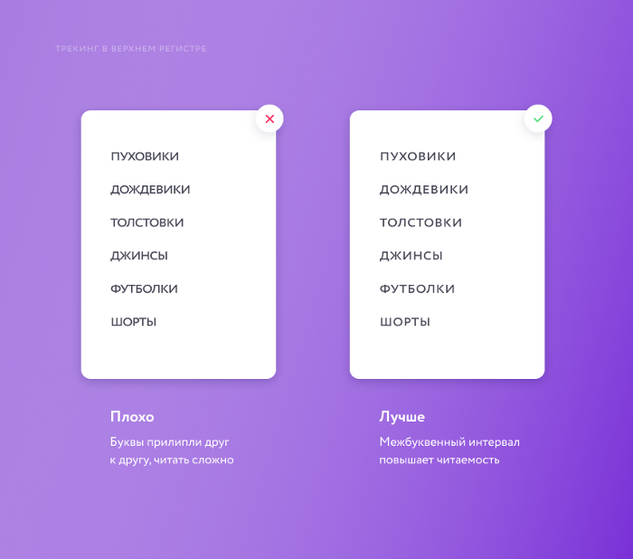
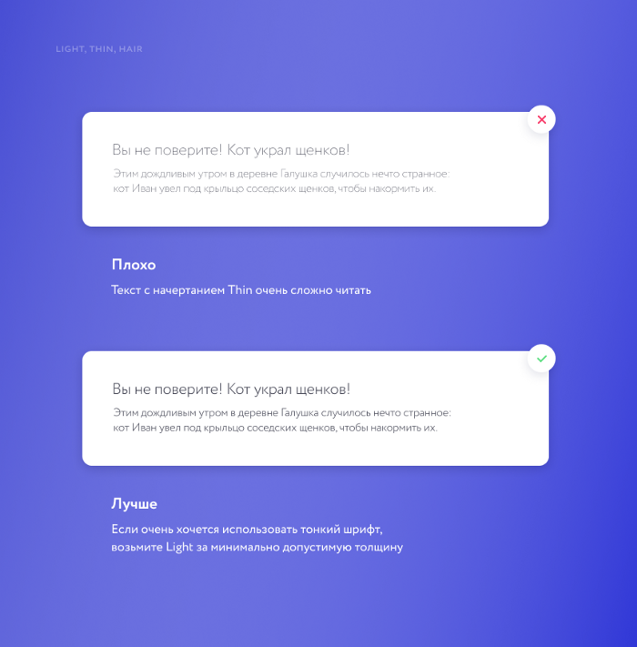
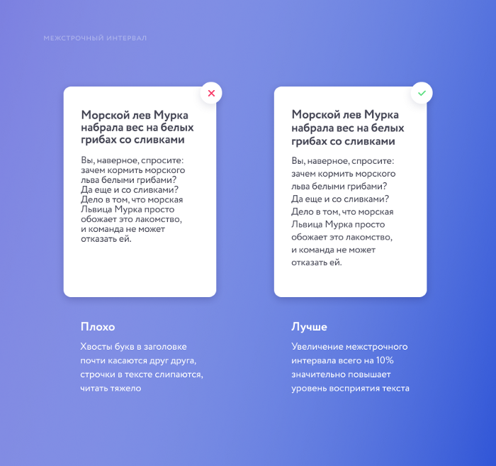
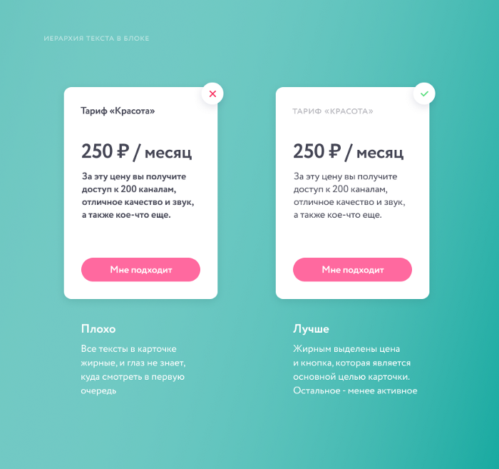
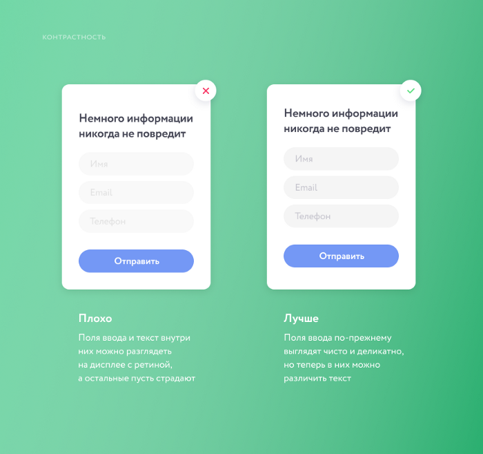
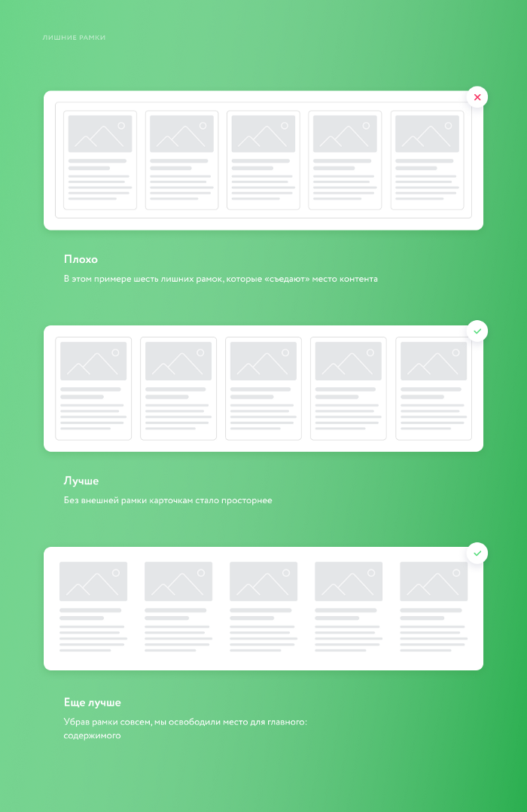
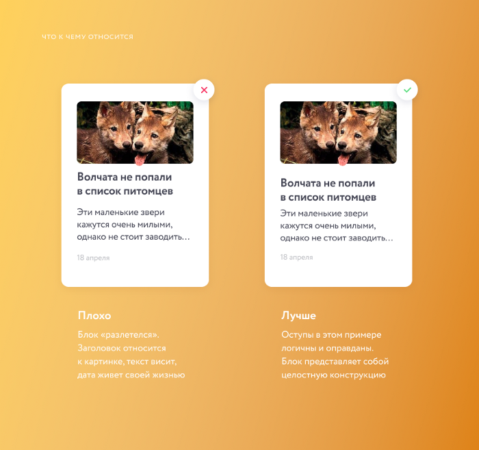
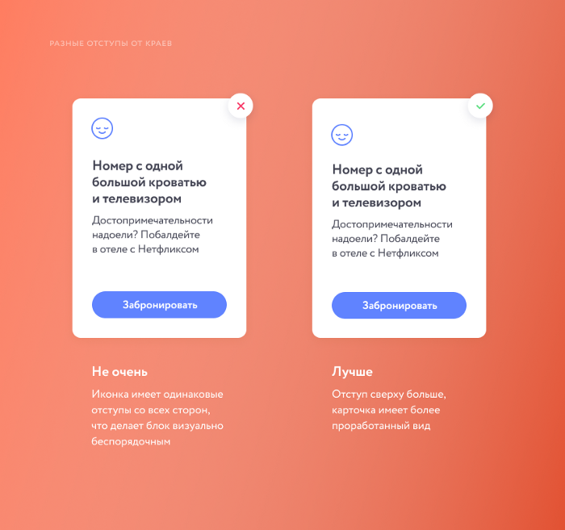
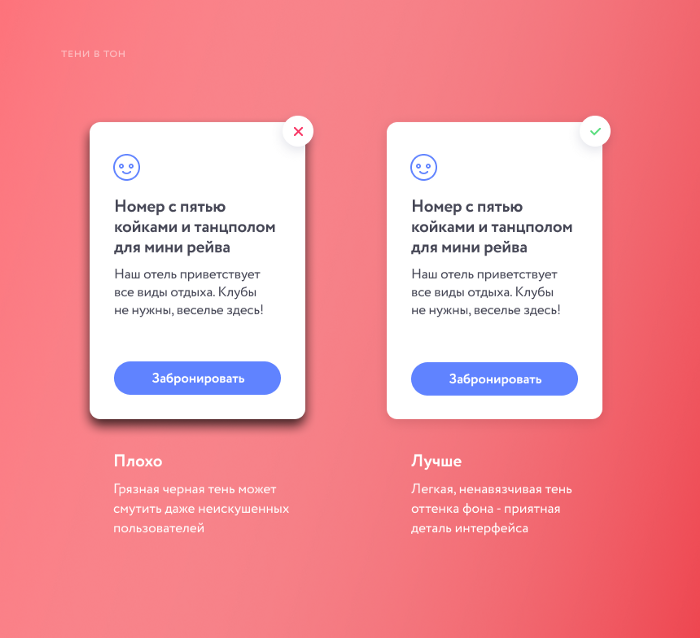
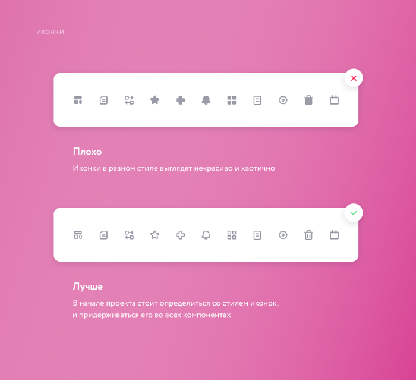

Эта история будет особенно полезна новичкам, но перечисленные
советы не помешает держать в памяти всем, кто так или иначе
связан с дизайном, вне зависимости от количества опыта.
Anna Sherruble
Это моя первая история на Medium, поэтому немного о себе: меня зовут Аня, я дизайнер и фронтенд-разработчик с опытом работы 6 лет. Родом из Челябинска, живу в Чикаго.
До переезда в штаты я 2,5 года работала в большой IT компании, где два талантливых дизайнера вложили в мою голову тонну знаний. Теперь работаю в американской компании, где отвечаю за весь дизайн одна.
Частью своего опыта я хочу поделиться. Эти советы не касаются дизайн-трендов и моды, они больше о базовых принципах, про соблюдение которых можно случайно забыть. Так что, держите шпаргалку, по которой можно проверять макеты.
Содержание статьи
1. Работа с текстом
По всем канонам было бы хорошо начать с того, что не нужно использовать более 2 шрифтов, а также плодить их начертания в рамках одного проекта, но я думаю, что это уже стало слишком очевидным, и надеюсь, что все и так следуют этому принципу. Поговорим лучше о более тонких моментах. Трекинг в верхнем регистре
Трекинг в верхнем регистре
Каждый раз когда вы используете текст, состоящий полностью из заглавных букв, не забывайте «разрядить его», задав межбуквенный интервал. Это предотвратит символы от слипания друг с другом и сделает текст более читабельным.
Начертания Light, Thin и Hair
С этими начертаниями нужно быть аккуратными. Light можно использовать, но это зависит от шрифта — нужно смотреть. Про Thin и периодически присутствующий Hair лучше забыть, делая продукт, который пользователи в итоге увидят на экранах. Такой текст в большинстве случаев очень плохо читается, а на некоторых экранах и вовсе пропадает или создает эффект сломанных полупикселей.
Размеры заголовков и основного текста
Поговорим про типографику в вебе. Заголовки бывают шести уровней (h1-h6). Для начала убедитесь, что у вас в проекте их не больше четырех, а затем следите за их постоянством и логикой. В дизайне сайтов и лендингов самый большой заголовок (например, в самом первом блоке главной страницы) может быть большим настолько, насколько вам хочется (учитывая текущий тренд к выразительной типографике). Но с остальными заголовками и текстами лучше не перебарщивать. Слишком большие тексты читать так же неудобно, как и слишком мелкие. Теперь про основной текст. По умолчанию в браузере (возьмем Google Chrome как образец) все тексты отобразятся размером 16px. Это хороший, удобный для чтения размер текста, но я предпочитаю использовать как минимум 17px для основного текста, и 14 для второстепенного. 12px советую взять за минимум, так как все, что меньше, многие люди просто не смогут разглядеть из-за плохого зрения или плохого монитора. Чего обязательно нужно избегать: близких по значению размеров. То есть, у вас не должно быть размера текста 16px и тут же 17px. Это вносит путаницу и визуальную неопрятность во внешний вид продукта. И это просто ничем не оправдано.
Межстрочный интервал
Редко когда можно оставить межстрочный интервал в значении Auto. Как правило, его стоит немного увеличить, чтобы повысить читаемость. Особенно это справедливо для большого количества текста (блог, статья, любой информационный блок на сайте или в приложении). В заголовках за этим также стоит следить, обратите внимание на то, не касаются ли друг друга хвосты и выносные элементы букв.
Иерархия заголовков и текстов
Жирным принято выделять более важные места в тексте. Такими местами могут быть заголовки, ссылки (или кнопки) и иногда акценты внутри текста. Если весь текст в блоке будет иметь начертание Bold, то станет непонятно, куда смотреть, и что важнее. Расставляйте акценты правильно, все не может быть одинаково важным.
Контрастность текста
Уделите особое внимание цвету текстов в ваших макетах. Важно, чтобы они были достаточно контрастными, чтобы их можно было без труда прочесть на любом мониторе. Особенно легко упустить этот момент в плейсхолдерах в полях ввода, где часто используется светло-серый текст.
2. Пространство и отступы
Negative space, «воздух» между элементами — очень важный аспект хорошего дизайна. Расстояния между элементами макета помогают понять, что к чему относится, задают ритм и баланс.
Избавьтесь от лишних рамок и линий
Отделить одну смысловую часть от другой с помощью рамки или 1px линии проще всего. Но не всегда это будет являться лучшим вариантом. Я сталкивалась с дизайном, где был контейнер внутри контейнера, а внутри еще несколько контейнеров, разделенных между собой линиями. Все контейнеры при этом имели собственную рамку. В таких ситуациях нужно остановиться и подумать: действительно ли это уместно и необходимо? Сегодня практически в каждом интерфейсе присутствуют карточки. Карточки товаров в интернет-магазине, карточка услуги в приложении по уходу за животными, карточка ресторана доставки любимой пиццы. А также превью статьи, новости, заметки. Иногда 1px граница может быть вполне хорошим решением, но есть и пара других способов отображения этого элемента. Например, тень или расстояния. Главное, чтобы расстояния между карточками были больше, чем отступы внутри ее элементов. Отказ от «обрамления» карточки или любого другого блока сэкономит место для содержимого, так как не будет необходимости выделять место под внутренние отступы. В конце концов, именно содержимое является самой важной частью любого продукта, так что не стоит неоправданно урезать отведенное под него место.
Что к чему относится?
Отступы помогают визуально определить принадлежность одного элемента к другому. Рассмотрим верстку превью статьи на информационном портале. Допустим, оно состоит из изображения, заголовка, вступительного текста из 3–4 строк и даты публикации. Заголовок должен «дружить» с текстом, и образовывать целостную конструкцию. Дату публикации стоит отодвинуть от этого блока на чуть большее расстояние, чем от заголовка до текста. И, наконец, весь блок с информацией нужно отодвинуть от картинки на расстояние такое же (или больше), как от текста до даты. Еще нужно убедиться, что карточка с превью находится на достаточном расстоянии от других таких же карточек. Сложно? Посмотрите на картинку.
Меньше = больше
Наверняка вы сталкивались с заказчиком или менеджером, который требовал, чтобы вся информация уместилась в один блок. Или в первый экран на мобильном телефоне. Чтобы и заголовок, и телефон, и все меню, и специальное предложение, и логотип чтобы побольше был. Я не великий оратор, и не подскажу вам, как убедить людей в том, что делать этого не нужно, но вы можете им сказать вот что: чем меньше информации пользователь видит за раз, тем проще ему принять решение (например, позвонить по телефону). Чем более поэтапно мы будем выдавать информацию, тем легче и приятнее пойдет общение пользователя с продуктом. Нельзя допустить, чтобы люди разбирались в интерфейсе: никто не хочет решать эти ребусы. Ну, и в конце концов, груда налепленных друг к другу элементов — это просто некрасиво и режет глаз.
Неравные отступы от краев экрана
Если вы, например, делаете афишу, плакат, или нашу любимую карточку товара, то обратите внимание на один момент: отступы от краев. Скажем, содержимое размещается классическим путем — от левого верхнего угла к правому нижнему. В таком случае, сделайте верхний отступ немного больше, чем левый. Визуально это будет смотреться приятнее, чем равные отступы. Одинаковые отступы — ленивая верстка.
3. Изображения и цвета
Картинки, иконки, фоны — все это в наибольшей степени влияет на настроение продукта. Именно по изображениям должно быть с первого взгляда понятно, чем занимается компания, что делает приложение, что предлагает сайт.
Немного о логотипе
Я не слишком часто разрабатывала логотипы, но штук 20 точно было. Что я поняла из своего опыта, а также смотря по сторонам на улицах Челябинска (да и Чикаго тоже): хороший логотип — это сложно. Но дизайнер может точно сделать логотип лучше, следуя хотя бы минимальным правилам и принципам. Например, выбор цвета. Я видела магазин товаров для рыбалки под названием Vip Улов (уже хорошо), и логотип у них был сиреневого цвета. Сочетание сиреневого и слова Vip создают ассоциации совсем не с рыбалкой, и это говорит о плохо сделанной работе. Вообще, в любой отрасли можно использовать любые цвета, и результат будет отличным, но если у вас не слишком много опыта, то такая простая вещь, как правильный подбор подходящего цвета для продукта уже поможет избежать Vip XXX Улова. Второй совет про логотип: если образ никак не придумывается — не придумывайте. Поработайте со шрифтом, сделайте меньше, но точнее и продуманнее. Мир не станет лучше от еще одного лого юридической фирмы с весами или печатью.
Тень
Про это мне рассказали в самом начале моего пути в хорошей IT компании: тень от объекта не бывает черной. Она всегда будет темного оттенка поверхности, на которую она отбрасывается. А еще теней бывает несколько: одна короткая и яркая, прямо под объектом (если он на чем-то стоит или лежит), а вторая более размытая и прозрачная. Этих базовых знаний о тенях будет достаточно, чтобы избежать «грязи» в проекте, которую создают яркие черные нереалистичные тени от чего-либо ни было.
Иконки и иллюстрации
Все, что может быть вектором — должно быть вектором. Любые пиктограммы, стрелочки, логотипы компаний — все это нужно предоставлять разработчикам в формате SVG (PDF для iPhone). Иконки в PNG смотрятся очень плохо, у них расплываются края, лезут пиксели, в общем, происходят страшные вещи. Иллюстрация, конечно, может быть сохранена в виде большой картинки в PNG, и затем ей зададут параметры, и она будет выглядеть хорошо, почти как вектор. Но к чему эти полумеры, когда можно просто выдать вектор? К тому же, он занимает меньше места.
Еще про иконки
При создании набора иконок для сайта или приложения, убедитесь, что у них одинаковая ширина линии, одинаковые радиусы скруглений углов. Что они вписываются в одинакового размера квадрат и равны по массе. Если в иконках есть круг — он должен во всех быть одного размера. Иконки будут либо линейными, либо цельными (с заливкой). Не стоит использовать смесь тех и других в одном проекте.
